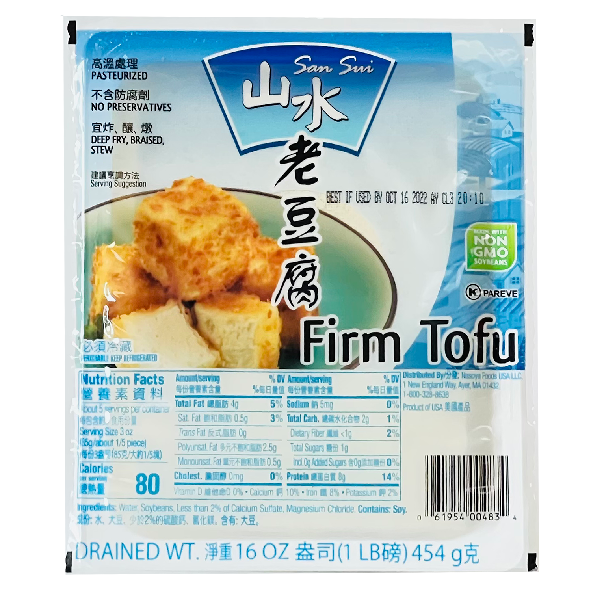

silken tofu
Very soft, jelly like tofu. Great for soups or cold side dishes.


firm tofu
Most versitile. Can be pan-fried, stir-fried, deep-fried, put in a stew. Tip: if you need a firmer tofu just wrap firm tofu in a paper towl and place something heavy like a plate on it and leave it for a few hours and you have extra-firm tofu. When all else fails, firm tofu is best.
extra firm tofu
Pretty similar to firm, but it doesn’t absorb marinades as well. Holds up better when pan frying compared to firm.